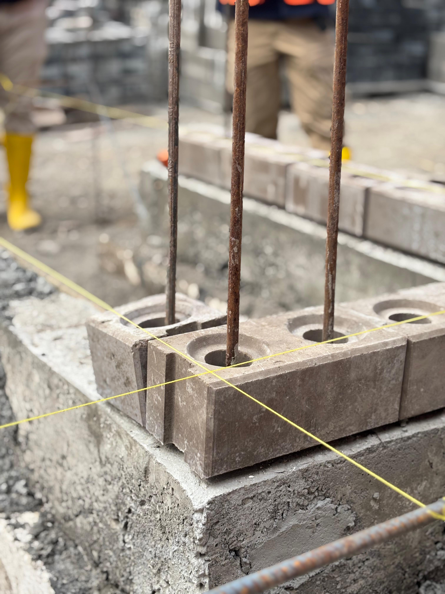
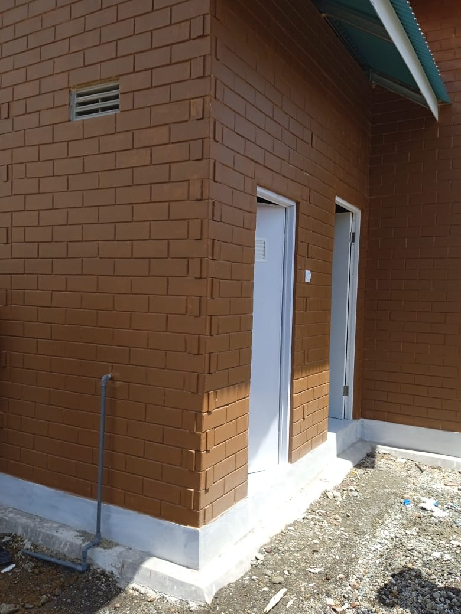
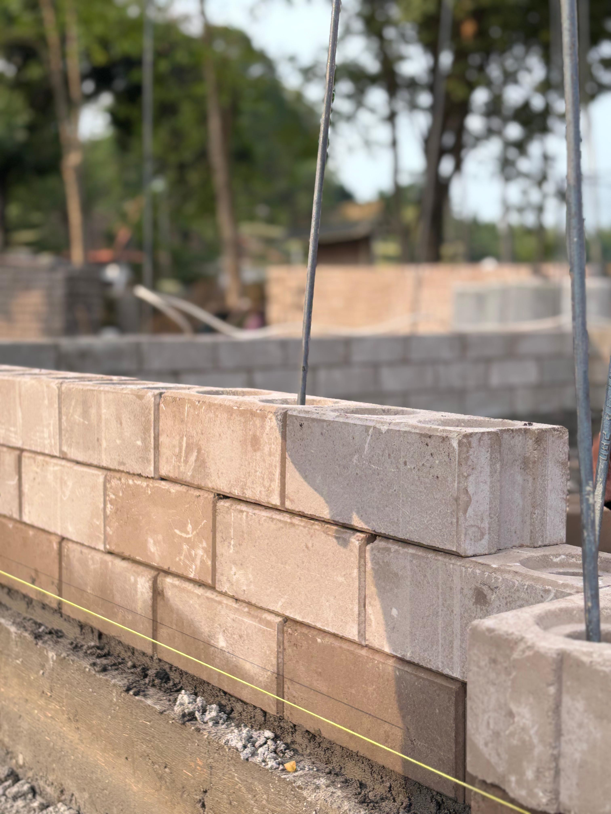
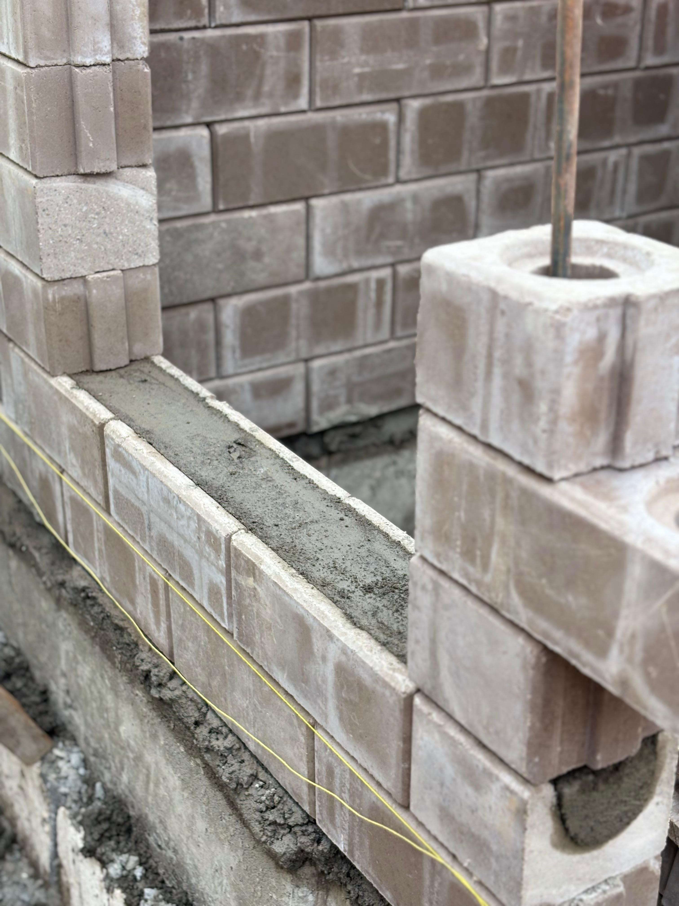

Produk Bata Interlock Presisi
Inovasi Cepat Membangun Rumah Masa Kini
Merupakan Bata yang didesain khusus sehingga antar bata saling mengunci (interlock / sistem lego), dibuat tanpa proses pembakaran, mempertimbangkan kemudahan dan kecepatan serta kekuatan pada aplikasi dinding bangunan
Keunggulan :
1. 2X Lebih cepat
Rumah T-36 dibangun 21-30 hari konstruksi dan dinding lebih murah
2. Instalasi mudah
Kebutuhan 4 orang tenaga kerja (rumah tipe 36)
3. Ramah Gempa
Sesuai SNI 1726 -2012 untuk rumah bata interlock presisi (NO. LHU: 53- S/LHU/Lb.14/2019) Berdasarkan uji siklik
4. Teknologi Teruji
Telah lulus uji dan sertifikasi oleh Ditjen Cipta Karya PUPR Tahun 2023 (No. PA 0104-Ct/1207)
5. Presisi Tinggi
Teknologi Pracetak dengan ketelitian 1mm , Sudut siku sempurna dan permukaan halus.
6. Jalur Instalasi Utilitas
Tidak perlu merusak dinding, jalur instalasi utilitas melalui rongga bata
7. Kreasi Finishing
Bebas Ciptakan berbagai hasil akhir, corak natural yang khas, clear coating , cat,dengan tekstur asli bata, atau plester dan acian
8. Desain Fleksibel
Dimensi dan bentuk ruangan tidak terikat ukuran modul panel atau bentang struktur yang terbatas
9. Suhu Ruang Nyaman
Menurunkan suhu hingga +/- 18% lebih efektif dibandingkan bata ringan, terbukti dari uji ketahanan api
10. Kedap Suara
Dengan densitas atau kerapatan yang lebih tinggi, sehingga lebih kedap suara dibanding bata ringan
Demo Bata Interlock Presisi
Katalog Produk (PDF)
Geser untuk melihat halaman selanjutnya
Galeri Bata Interlock Presisi
Berikut beberapa contoh visualisasi produk kami:



